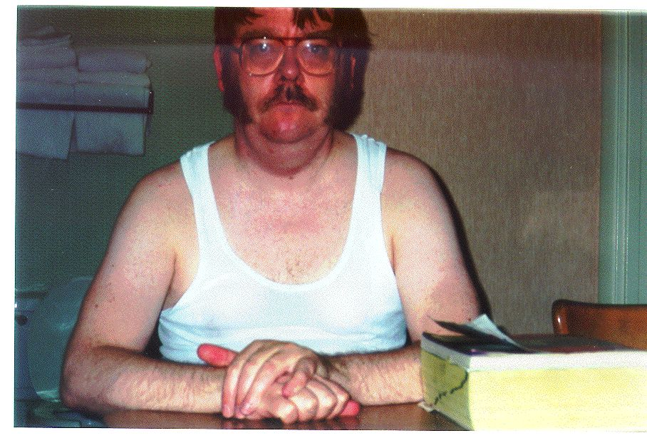

Race Prep, Step 2: Just a Moustache!
|

| |
This is another intermediate picture in the process of getting to the
stage of being clean-shaven, except for sort-of Richard Petty 70's
style sideburns.
My wife had gone to bed already by this time, so I used the timer in
the camera to take the picture. This is why the top of my head is cut
off; I simply put the camera on a counter in the kitchen, and aimed
it only roughly. It also explains why I forgot to put anything
over the undershirt, since I had removed my shirt to prevent messing
it up while shaving, and my wife was not there to remind me to put
it on again. 
|